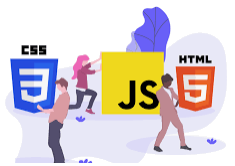

No curso de Ciência da Computação que é uma graduação focada no estudo dos fundamentos teóricos e práticos da computação, são abordados temas como: a lógica matemática os algoritmos, banco de dados, requisitos, ciência de dados, inteligência artificial e segurança da informação. Nesse curso os alunos entram em contato também com o desenvolvimento WEB.
O desenvolvedor Front-End implementa as funcionalidades de tudo que é visível para o usuário, ele constrói a interface de usuário ou seja, menus, interfaces, layout etc. Atualmente esses desenvolvedores combinam o HTML5, o CSS3 e o JavaScript para criar páginas da Web com boa funcionalidade, usabilidade, portabilidade e boa aparência em vários dispositivos, plataformas e navegadores.
O HTML, contém o conteúdo das páginas. O HTML5 é uma linguagem de marcação usada para estruturar e apresentar conteúdo na World Wide Web, é a quinta versão do HTML. O HTML5 fornecerá um formato adequado ao seu site, ele descreve a estrutura das páginas, principalmente no que diz respeito as tabelas, textos, cabeçalhos e imagens ou gráficos.
O CSS, contém as informações de estilo para definir a aparência do conteúdo. O CSS3 significa Cascading Style Sheet nível 3, trata-se de uma versão avançada do CSS. Ele é usado para estruturar, estilizar e formatar páginas da web. Vários novos recursos foram adicionados ao CSS3 e ele é suportado por todos os navegadores modernos. O CSS é importante porque incrementa a aparência do front-end do site e possibilita uma ótima experiência para o usuário. Sem CSS, os sites seriam menos agradáveis e mais difíceis de navegar.
O JavaScript (ou JS) contém código que aplica comportamento interativo dinâmico ao conteúdo. JavaScript é uma linguagem de script que permite funcionalidades como: criar conteúdo de atualização dinâmica e controlar multimídia. O JavaScript ajuda os desenvolvedores a criar páginas da Web dinâmicas e interativas. Aguns recursos do JavaScript: é uma linguagem de script centrada em objeto, faz a validação da entrada do usuário e possui estruturas de programação como else e if.
Aluno: Henrique Gomes Soares Matricula: 1a291087668